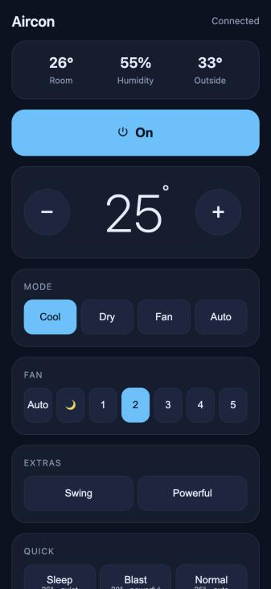
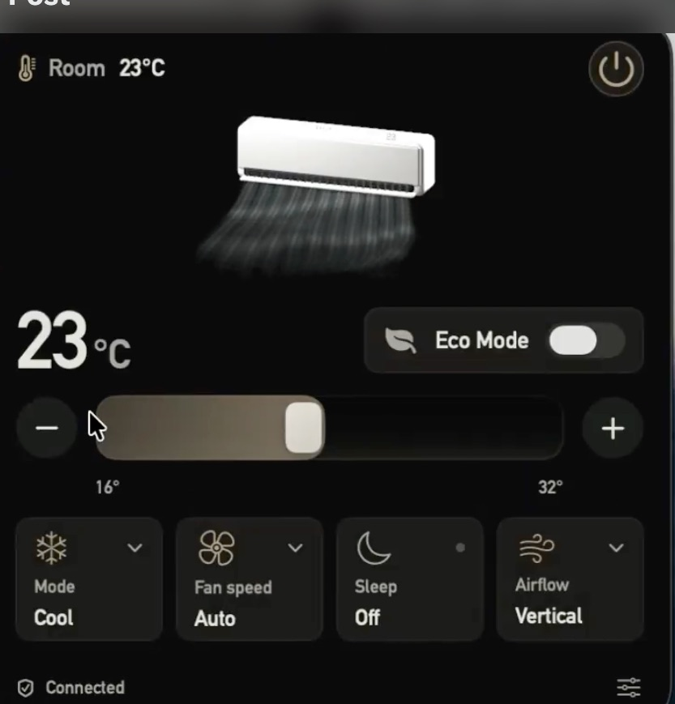
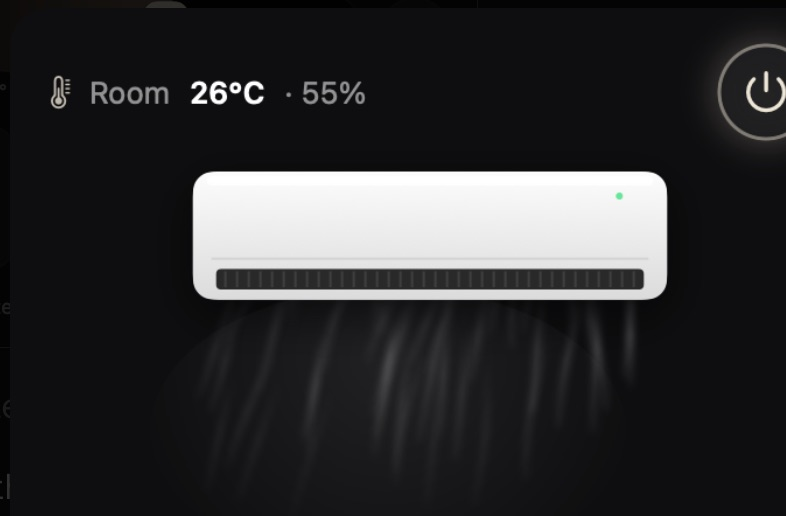
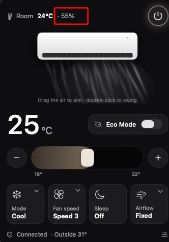

Example · I *wrote* my own aircon remote
The Claude Code session where I replaced Daikin's app with my own. My messages are as I typed them. Claude's replies are cut down to the part that moved things forward. The hotspot name, network addresses and a part number are redacted.
1 · The ask
Laid out four paths: a phone IR blaster, an ESP32 bridge, a smart IR hub, or the official Wi-Fi adapter. Pointed out that if the AC has Wi-Fi, Daikin's app already works, "so there's nothing to vibecode".
Agreed that's a good reason. Explained that with Wi-Fi, a custom app is easier than infrared, because it can talk to the adapter directly with no cloud and no login.
2 · Finding out what the AC speaks
The AC isn't on your Wi-Fi. Asked whether the indoor unit has a Wi-Fi light at all.
That's the adapter's own setup hotspot. Join it from your phone and open http://192.168.127.1/common/basic_info.
Something is answering, so it's a newer adapter family. Sent five more URLs to try and asked for the country and the indoor model.
Confirmed: it's a DSIoT adapter, and the open-source pydaikin driver already maps it. Power, mode, temperature, fan, swing and sensor readings are all documented.
One blocker: only Daikin's app knows how to put the adapter on your home Wi-Fi.
DAIKIN Mobile Controller. Use it once to pair, then delete it.
3 · Building it

Built a menu bar app like the post: the AC icon with the set temperature, and a panel with power, temperature, mode, fan, swing, Powerful and presets. Also a phone web app.
Not needed. The app runs from your own folder, and the local network prompt is per user.
4 · One for my partner
A native Android app is better than the web app, because it doesn't need my Mac to be awake. But this Mac has no Android tools. Offered to install them, or build in the cloud on GitHub Actions.
Stopped at the secrets page, since entering secrets is mine to do. Gave me two pbcopy commands to paste the signing key and password myself.
Please sign in yourself, because I can't enter passwords for you. Then I'll add the AC to the DHCP list and ask before clicking Apply.
Me, looking back: I just let Claude handle my router config. First time I've ever let anything but my own hands touch that page. I was amazed it worked, and honestly a bit nervous until it stopped and asked before Apply.
5 · Teaching it my AC
The driver doesn't know where this unit keeps the flap settings. Started a recorder that watches every value on the AC, and asked me to press the swing buttons on the physical remote.
6 · Steering the look
The menu bar app worked, but it still looked like the first design. So I cropped a frame from the post's GIF and sent it.

Read it as the airflow drawing: air streaks that point where the flaps point and sway when swing is on.
Understood: the whole vibe, not just the airflow. Near-black background, warm cream accents, soft cards, a big light temperature readout. Replaced the entire UI.

Admitted it had assumed there was no Eco mode, because the driver puts it somewhere that doesn't exist on this unit. Recorded again while I pressed ECONO.
Built it: drag the air to aim the flaps, double-click to toggle swing.

Indoor humidity from the unit's sensor. Live, not hard-coded. Suggested labelling it.
I never described the design in words. Four short messages and one screenshot did it: "similar ui to this", "where airflow is going", "that vibe", "dragging the air".
Icon and set temperature in the top bar. Click for the full panel, drag the air to aim it.
Same design, for my partner's phone. Talks to the AC directly, no Mac needed.
The first version. Needs a helper running on the Mac, so the Android app replaced it.
All three only work on our home Wi-Fi. And one step still needed Daikin's app: pairing the adapter to the network. That step is what the next log is about.